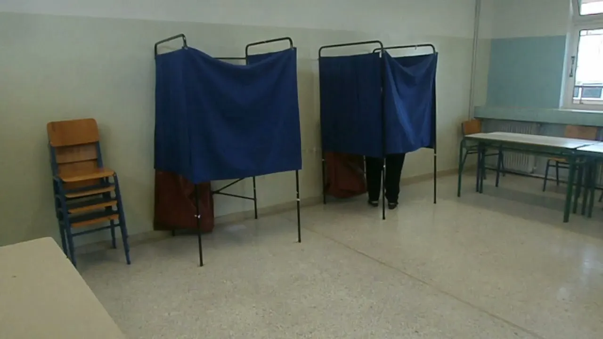

재원표가 공약의 본문입니다

지방선거에서 가장 자주 보이는 말은 무상, 확대, 지원입니다. 듣기에는 좋지만 실제 행정에서는 예산표가 붙어야 공약이 됩니다. 어느 세입에서 돈을 마련할지, 기존 사업을 줄일지, 지방채를 쓸지, 중앙정부 보조금에 기대는지 밝혀야 합니다. 재원표가 없으면 공약은 아직 구호에 가깝습니다.
지방정부 예산은 마음대로 늘릴 수 없습니다. 인건비, 복지, 시설 유지, 법정 의무 지출이 이미 큰 비중을 차지합니다. 새 사업을 넣으려면 기존 사업과 충돌하거나 세입 증가가 필요합니다. 후보가 총액만 말하고 연도별 비용을 말하지 않으면 실제 부담을 알기 어렵습니다.
특히 현금성 지원 공약은 첫해보다 둘째 해가 중요합니다. 한 번 시작한 지원은 줄이기 어렵고, 물가와 대상자 증가에 따라 비용이 커질 수 있습니다. 단발성 이벤트인지 반복 지출인지 구분해야 합니다.
권한 밖 약속은 늦어집니다
지방자치단체가 모든 문제를 직접 해결할 수 있는 것은 아닙니다. 교육, 교통, 주택, 의료, 산업단지, 치안은 중앙정부와 광역·기초단체, 공기업 권한이 얽혀 있습니다. 후보가 좋은 방향을 말해도 실제 권한이 어디 있는지 확인해야 합니다.
권한 밖 공약은 협약과 예산 조정, 법령 개정이 필요합니다. 이 과정은 선거 뒤 몇 달 만에 끝나지 않습니다. 유권자가 볼 지점은 후보가 어떤 기관과 협의해야 하는지, 이미 예비타당성이나 도시계획 절차가 시작됐는지입니다. 절차가 없는 약속은 일정이 길어질 가능성이 큽니다.
공약의 실행 가능성은 의회의 구성과도 연결됩니다. 지방의회 동의가 필요한 예산과 조례는 단체장 혼자 결정하지 못합니다. 정치적 구호보다 협상 가능성과 법적 경로가 더 중요할 때가 많습니다.
건물은 지은 뒤가 비쌉니다
지방 공약에서 새 센터, 체육관, 문화시설, 주차장 같은 건설 약속은 눈에 잘 보입니다. 그러나 건물은 짓는 비용보다 운영비가 오래 남습니다. 냉난방, 인건비, 청소, 안전 점검, 프로그램 운영비가 매년 필요합니다.
시설 공약은 이용률을 함께 봐야 합니다. 인구가 줄어드는 지역에 비슷한 시설이 여러 개 생기면 유지비가 주민 부담으로 돌아옵니다. 기존 시설을 고치거나 통합 운영하는 편이 더 나을 수 있습니다. 새 건물이 곧 좋은 행정은 아닙니다.
교통 공약도 마찬가지입니다. 노선을 늘리면 기사 인력과 차량 유지비, 적자 보전이 필요합니다. 무료 또는 할인 정책은 이용자에게 도움이 되지만 재정 부담을 누가 감당하는지 분명해야 합니다. 지속 가능성이 빠진 공약은 선거 뒤 갈등으로 돌아옵니다.
유권자는 순서를 바꿔야 합니다
공약을 볼 때 먼저 이름을 보고 찬반을 정하기보다 세 가지 질문을 던지는 편이 낫습니다. 돈은 어디서 나오는지, 누가 실행 권한을 갖는지, 몇 년 동안 유지할 수 있는지입니다. 이 질문에 답하지 못하는 공약은 아무리 매력적이어도 실행력이 약합니다.
후보의 과거 이행률도 참고할 수 있습니다. 약속을 얼마나 지켰는지, 예산을 어떻게 조정했는지, 사업을 중간에 수정할 때 주민에게 설명했는지 보면 행정 능력을 가늠할 수 있습니다. 선거 공약은 발표보다 집행 기록에서 더 잘 보입니다.
지방선거는 생활에 가까운 선거입니다. 그래서 더 꼼꼼해야 합니다. 큰 이념보다 버스 배차, 돌봄, 쓰레기 처리, 지역 의료, 상권 회복 같은 문제가 예산과 행정으로 이어집니다. 공약의 좋은 말보다 숫자와 절차를 확인하는 습관이 필요합니다.
관련 영상
지방선거 10대 공약 공개, 각 당의 1호 공약은?
좋은 지방 공약은 화려한 이름보다 설명이 자세합니다. 재원과 권한, 유지비를 숨기지 않는 공약일수록 실행 가능성이 높습니다. 선거는 약속을 고르는 일이지만, 지방선거에서는 그 약속을 감당할 장부까지 함께 봐야 합니다.
지방선거 공약은 무상 구호보다 재원표가 먼저을 볼 때는 발표 직후의 반응보다 다음 분기까지 이어지는 숫자를 함께 확인하는 편이 좋습니다. 단기 뉴스는 방향을 빠르게 바꾸지만 실제 변화는 계약, 예산, 생산, 소비 습관처럼 느린 항목에서 굳어집니다. 이 차이를 나누어 보면 과장된 기대와 실제 지속 가능성을 구분할 수 있습니다.
가장 실용적인 점검 방법은 한 가지 지표에 기대지 않는 것입니다. 가격, 수요, 비용, 규제, 실행 시간이 같은 방향으로 움직이는지 확인해야 합니다. 어느 하나만 좋아도 나머지가 따라오지 않으면 결과는 늦어지고, 여러 조건이 동시에 맞으면 변화는 예상보다 빠르게 확산될 수 있습니다.
이 주제는 한 번의 결론보다 관찰 순서가 더 중요합니다. 먼저 현재 병목을 확인하고, 그다음 누가 비용을 부담하는지 보며, 마지막으로 그 부담이 가격이나 행동 변화로 이어지는지 봐야 합니다. 그렇게 읽으면 제목보다 구조가 먼저 보입니다.
지방선거 공약은 무상 구호보다 재원표가 먼저을 볼 때는 발표 직후의 반응보다 다음 분기까지 이어지는 숫자를 함께 확인하는 편이 좋습니다. 단기 뉴스는 방향을 빠르게 바꾸지만 실제 변화는 계약, 예산, 생산, 소비 습관처럼 느린 항목에서 굳어집니다. 이 차이를 나누어 보면 과장된 기대와 실제 지속 가능성을 구분할 수 있습니다.
가장 실용적인 점검 방법은 한 가지 지표에 기대지 않는 것입니다. 가격, 수요, 비용, 규제, 실행 시간이 같은 방향으로 움직이는지 확인해야 합니다. 어느 하나만 좋아도 나머지가 따라오지 않으면 결과는 늦어지고, 여러 조건이 동시에 맞으면 변화는 예상보다 빠르게 확산될 수 있습니다.
이 주제는 한 번의 결론보다 관찰 순서가 더 중요합니다. 먼저 현재 병목을 확인하고, 그다음 누가 비용을 부담하는지 보며, 마지막으로 그 부담이 가격이나 행동 변화로 이어지는지 봐야 합니다. 그렇게 읽으면 제목보다 구조가 먼저 보입니다.
지방선거 공약은 무상 구호보다 재원표가 먼저을 볼 때는 발표 직후의 반응보다 다음 분기까지 이어지는 숫자를 함께 확인하는 편이 좋습니다. 단기 뉴스는 방향을 빠르게 바꾸지만 실제 변화는 계약, 예산, 생산, 소비 습관처럼 느린 항목에서 굳어집니다. 이 차이를 나누어 보면 과장된 기대와 실제 지속 가능성을 구분할 수 있습니다.
가장 실용적인 점검 방법은 한 가지 지표에 기대지 않는 것입니다. 가격, 수요, 비용, 규제, 실행 시간이 같은 방향으로 움직이는지 확인해야 합니다. 어느 하나만 좋아도 나머지가 따라오지 않으면 결과는 늦어지고, 여러 조건이 동시에 맞으면 변화는 예상보다 빠르게 확산될 수 있습니다.